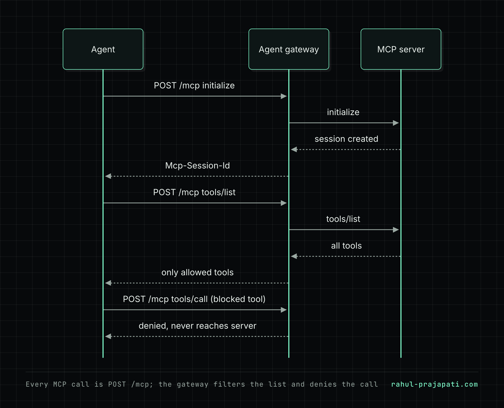
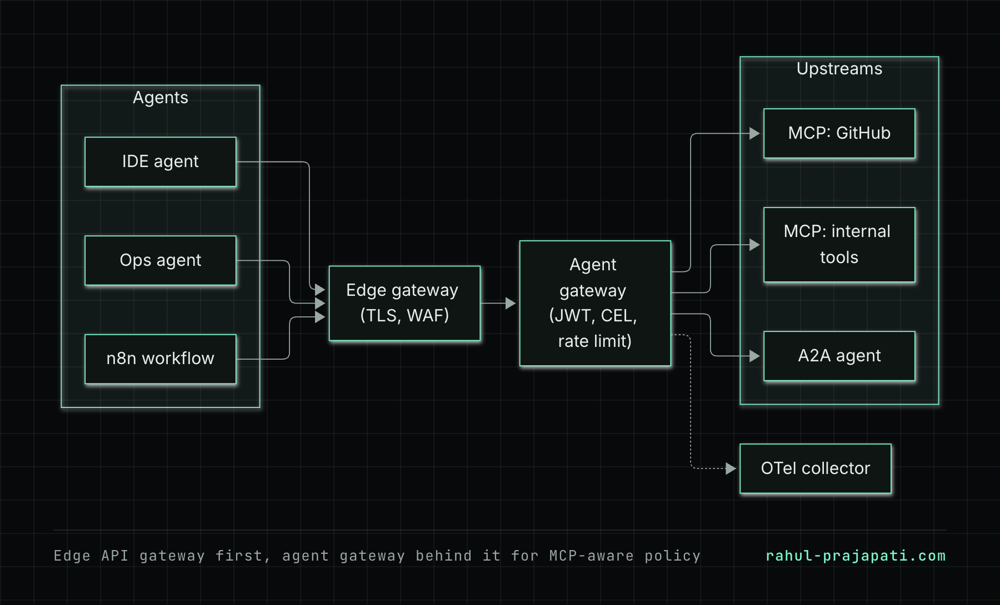

Say you put an MCP server behind the API gateway you already run, add key auth and a rate limit, and ship it. A week later the dashboard shows one route, POST /mcp, with a healthy 200 rate. Then someone asks which agent called the tool that deleted a branch, or why one agent used up a rate limit that every agent shares. The gateway can't answer either question.
The gateway isn't misconfigured. MCP (Model Context Protocol) sends everything as JSON-RPC to a single endpoint. The thing you actually want to authorise, the tool name, sits in the request body. And the list of tools the model gets to see is a response you should be filtering too. A gateway that routes on path and authenticates on a header can do neither without parsing the body and understanding MCP sessions.
That gap is what an agent gateway fills. The useful part, and the thing this post is built around, is that one policy rule does two jobs: it hides a tool from tools/list and it rejects tools/call for that tool. The lab below shows both with curl. There is also a JWT gotcha in step 4 that I'd test before trusting any setup.
I'll use agentgateway, an open-source gateway built for MCP and agent-to-agent (A2A) traffic, and compare it with a classic API gateway such as Kong.
What the API gateway actually sees
Here are three requests an agent sends to a streamable HTTP MCP server, in order:
{"jsonrpc":"2.0","id":1,"method":"initialize","params":{"protocolVersion":"2025-06-18","capabilities":{},"clientInfo":{"name":"ops-agent","version":"1.0"}}}
{"jsonrpc":"2.0","id":2,"method":"tools/list"}
{"jsonrpc":"2.0","id":3,"method":"tools/call","params":{"name":"delete_branch","arguments":{"repo":"my-repo","branch":"main"}}}All three use the same method and the same path. After the first one, they all carry the same Mcp-Session-Id header. Responses come back either as plain JSON or as a server-sent events (SSE) stream on the same connection. To a path-based gateway, a harmless tools/list and a destructive tools/call look identical.
You can teach a classic gateway to read the body with a custom plugin. I wouldn't, for three reasons. You'd have to handle SSE responses without buffering them. You'd have to track session state. And you'd have to keep up with a spec that still changes regularly. Some API gateway vendors are adding MCP features of their own, so check what your version supports before you write a plugin.

What an agent gateway adds
| Concern | Classic API gateway | Agent gateway |
|---|---|---|
| Routing unit | Host, path, HTTP method | MCP method, tool name, A2A agent |
| Authorization | Per route or per consumer | Per tool and per agent, written as policy |
| Tool discovery | Passes tools/list through untouched |
Filters tools/list to what the caller may use |
| Identity | API key or JWT per consumer | One identity per agent |
| Fan-out | One upstream per route | Several MCP servers behind one endpoint |
| Observability | Status, latency, path | MCP method, tool and target in logs and traces |
| Protocols | HTTP, gRPC | MCP (stdio, SSE, streamable HTTP) and A2A |
The row I care about most is tool discovery. If an agent never sees delete_branch in tools/list, it is much harder for an instruction hidden in a README it just read to steer it into calling that tool. You still have to deny the call itself, because a client can send any tool name it likes. Filtering the list keeps the tool out of the model's context in the first place.
agentgateway in one paragraph
agentgateway is an open-source proxy written in Rust and hosted by the Linux Foundation. It runs as a single binary with a YAML config, or on Kubernetes through the Gateway API. It speaks MCP and A2A, can put several MCP servers behind one endpoint, and applies route policies such as JWT auth, CORS, rate limits and authorization rules written in CEL (Common Expression Language). The config schema has changed between releases, so treat the snippets below as the shape and check field names against the docs for the version you install.
Try it yourself
You need:
- the agentgateway binary from the project's GitHub releases page
- Node.js with
npx, to run the reference "everything" MCP server curl
1. Proxy one MCP server
# config.yaml
binds:
- port: 3000
listeners:
- routes:
- backends:
- mcp:
targets:
- name: everything
stdio:
cmd: npx
args: ["-y", "@modelcontextprotocol/server-everything"]agentgateway -f config.yamlThe gateway starts the reference server as a child process over stdio and exposes it over HTTP on port 3000. A stdio upstream is handy for a lab. In production I'd point the target at a remote MCP server instead, so the gateway isn't also running your tools.
2. Talk to it with curl
GW=http://localhost:3000/mcp
# initialize, and keep the session id from the response headers
SESSION=$(curl -s -D - -o /dev/null "$GW" \
-H 'Content-Type: application/json' \
-H 'Accept: application/json, text/event-stream' \
-d '{"jsonrpc":"2.0","id":1,"method":"initialize","params":{"protocolVersion":"2025-06-18","capabilities":{},"clientInfo":{"name":"curl","version":"0.1"}}}' \
| grep -i '^mcp-session-id:' | awk '{print $2}' | tr -d '\r')
echo "session: $SESSION"
mcp() {
curl -s "$GW" \
-H 'Content-Type: application/json' \
-H 'Accept: application/json, text/event-stream' \
-H 'MCP-Protocol-Version: 2025-06-18' \
-H "Mcp-Session-Id: $SESSION" \
-d "$1"
}
mcp '{"jsonrpc":"2.0","method":"notifications/initialized"}'
mcp '{"jsonrpc":"2.0","id":2,"method":"tools/list"}'The response may come back as event: message followed by a data: line rather than bare JSON. That's SSE framing, and it's normal. Write down the exact tool names in the output, because the reference server has renamed tools between releases. If you later add a second target, the gateway prefixes tool names with the target name, and your rules have to match the names the gateway actually exposes.
3. Allowlist one tool
Add a policy to the route and restart:
binds:
- port: 3000
listeners:
- routes:
- policies:
mcpAuthorization:
rules:
- 'mcp.tool.name == "echo"'
backends:
- mcp:
targets:
- name: everything
stdio:
cmd: npx
args: ["-y", "@modelcontextprotocol/server-everything"]Run step 2 again, since the restart gives you a new session. This time tools/list returns only echo. Calling it still works:
mcp '{"jsonrpc":"2.0","id":3,"method":"tools/call","params":{"name":"echo","arguments":{"message":"hi"}}}'Now call any other tool name from the list you wrote down. The gateway rejects it and the reference server never sees the request. That's the whole idea in two commands: the list is filtered and the call is denied, both from one rule.
4. Give each agent its own identity
An allowlist that applies to everyone isn't worth much. Add JWT validation and write the rules against the token's claims. Replace the route's policies block with:
policies:
jwtAuth:
issuer: https://issuer.example.internal
audiences: [mcp-gateway]
jwks:
file: ./jwks.json
mcpAuthorization:
rules:
- 'jwt.sub == "ops-agent" && mcp.tool.name == "echo"'
- 'jwt.sub == "ide-agent"'With this, ops-agent can see and call only echo, and ide-agent gets every tool. To test it, sign a short-lived token for each sub with a key whose public half is in jwks.json, and add -H "Authorization: Bearer $TOKEN" to both curl calls from step 2. If the gateway can't find the JWKS file, use an absolute path.
The gotcha: test what happens with no Authorization header at all. How jwtAuth treats a missing token depends on its mode, and the default has not been the same in every release. In a lenient mode the request gets through with no claims. Neither rule matches, so it sees an empty tool list, but it still reaches the MCP layer. If your version has a strict mode, turn it on, and keep a no-token curl call in your smoke tests.
In a real setup, register each agent as its own client in your identity provider. The OAuth client credentials grant gives every agent a distinct client ID, so sub (or a custom claim) tells you which agent made the call. Don't give several agents one shared key.
In a previous role I set up Teleport access for Kubernetes, Argo CD and databases, where every session belongs to a named identity. Agents need the same treatment, and the gateway is the cheapest place to enforce it.
One rule I'd treat as non-negotiable: don't forward the agent's token to the upstream MCP servers. MCP's security best practices name token passthrough as an anti-pattern. The gateway should call upstreams with its own credential, or exchange the token for one scoped to that upstream.
Rate limits and tracing
Agent traffic doesn't look like human traffic. An agent retrying a failing tool can fire calls in a tight loop until it hits its step limit. If the limit is keyed on one shared API key, one runaway agent uses up the budget for everyone. Key it on agent identity instead.
agentgateway has two options. The local rate limit is a token bucket on the route. The remote rate limit calls an external rate-limit service for counters shared across replicas, and that's where per-agent keys fit, with descriptors built from request data such as the JWT sub. Check the field names for your version, because I'd expect this part of the schema to keep changing.
For tracing, point the gateway at an OpenTelemetry collector:
config:
tracing:
otlpEndpoint: http://localhost:4317agentgateway's access logs can include MCP fields such as the method and the tool name. Confirm what your version emits before you build dashboards on it. The fields worth having on every line are agent identity, MCP method, tool, target, the policy decision and latency. Leave full tool arguments out of the logs. They often contain file contents, queries or secrets the agent picked up along the way.
The gateway lessons I trust most come from incident response. In my current role I handle incident response across gateways, load balancers, GKE and Cloud Run, from P0 traffic incidents to 5xx spikes. The first questions are always who is calling, which upstream is failing, and since when. The gateway is the one component that sees all three, but only if its logs carry the caller and the upstream on every line. Adding that after an incident starts is much harder than doing it on day one. With agents, the "caller" is a loop that can send a lot of requests before a human notices.

Where the classic API gateway still fits
I wouldn't replace the edge gateway. Kong, or a cloud load balancer with a WAF, is good at TLS termination, IP rules, coarse global rate limits and the HTTP basics. The agent gateway sits behind it and handles what only it understands: MCP sessions, tool lists, per-tool decisions and A2A routing. Two layers means two configs to maintain. In return, each layer stays simple enough to debug in the middle of an incident, and that's the property I care about most in anything on the request path.
The same split matches how I build ops agents and n8n workflows today: least-privilege access, with humans approving changes. A prompt that tells the agent to stay read-only is only a request. A gateway rule that hides the write tools is enforced on every call.
Things to check after rollout
- Timeouts on streams. SSE responses and long-running tool calls stay open far longer than a normal API request. On a Google Cloud Application Load Balancer the backend service timeout defaults to 30 seconds and will cut longer responses. Raise it with
gcloud compute backend-services update BACKEND_SERVICE --global --timeout=600(pick a value that fits your longest tool call), and check the gateway's own idle timeouts as well. - The no-token case. Keep a curl call without a token in your smoke tests and make sure it fails.
- Session affinity. If your MCP servers keep session state and you run several replicas, requests carrying the same
Mcp-Session-Idhave to land on the same place, or the servers have to be stateless. - Deny, don't only filter. Test that a
tools/callfor a hidden tool is rejected. A client can ignore the list it was given. - Tool names after fan-out. When you add a second MCP target, look at the prefixed names before you write or update rules.
- The denial rate as a signal. Alert on denials per agent. A jump right after a deploy often means a tool was renamed upstream, not that someone is attacking you.
- Shared fate. Every agent now depends on this one component. Put its config through the same review and rollback path as application code, and keep the previous config ready to redeploy.